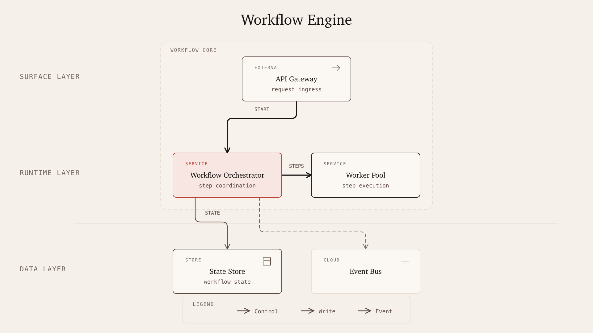

Architecture Demo
Workflow Engine

A workflow orchestration case showing gateway ingress, orchestration, worker execution, state persistence, and event-based continuation.
Architecture Demo

A workflow orchestration case showing gateway ingress, orchestration, worker execution, state persistence, and event-based continuation.